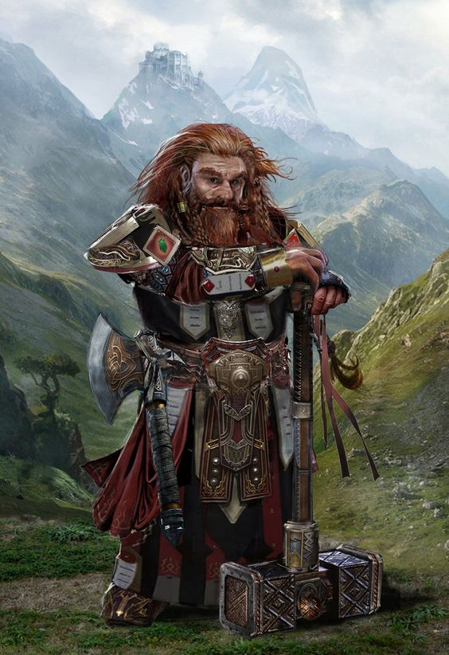
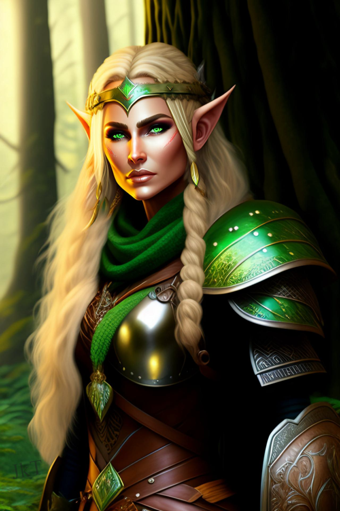
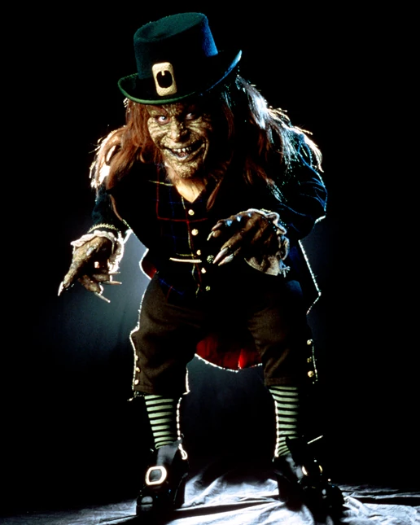
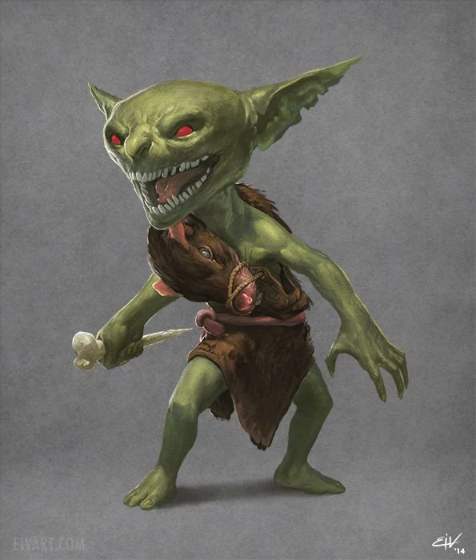
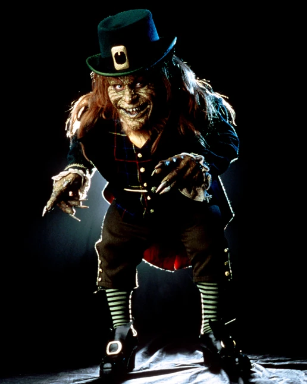
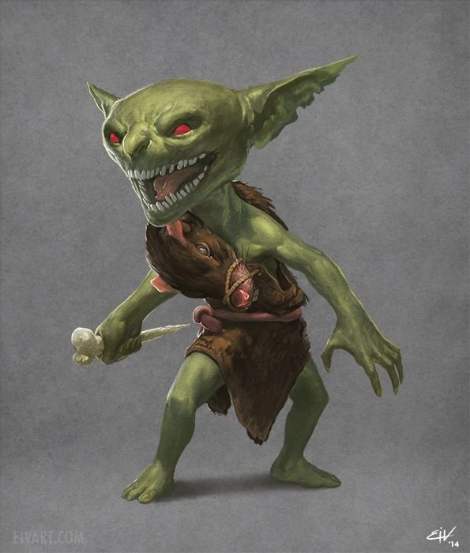
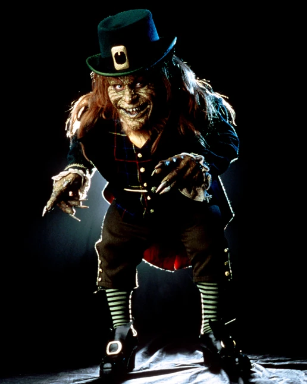
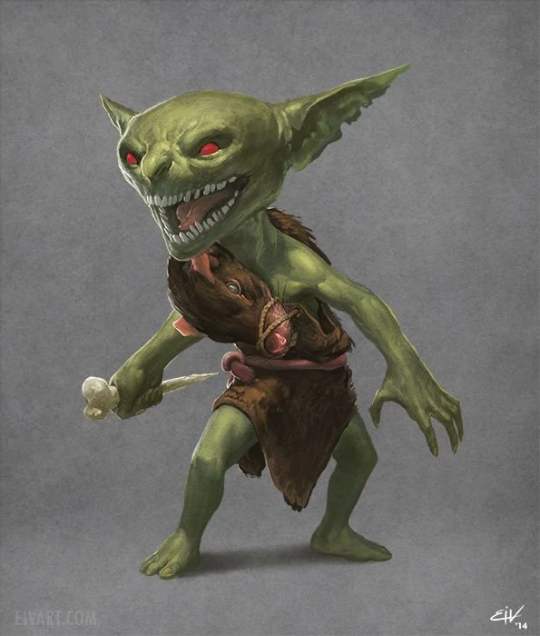
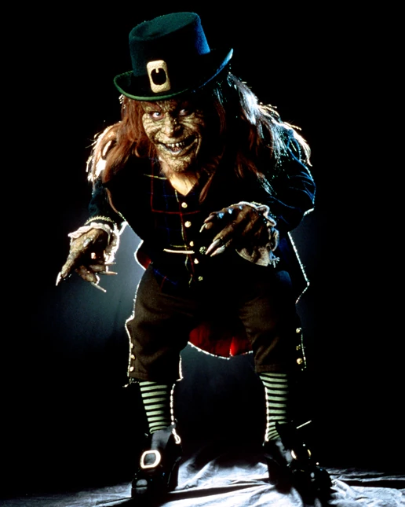
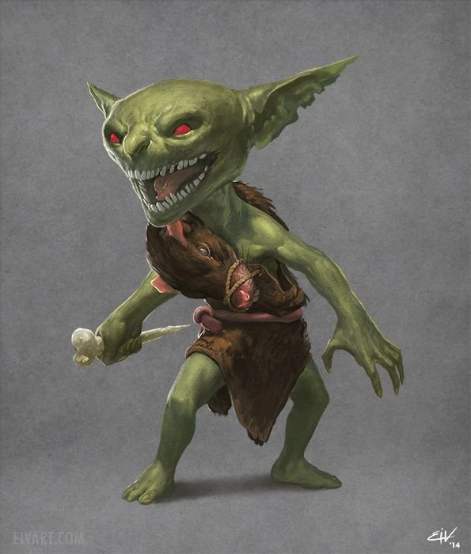

Gallery🍃
From left to right: dwarf, elf, fairy, leprechaun & goblin


 





Before you continue scrolling down, make sure to follow me on my GitHub account: @pridirenzo 👾
Elves are mythical beings often depicted as human-like in appearance but possessing exceptional beauty, grace, and longevity. They are a prominent element of folklore and fantasy literature, appearing in various cultures and traditions around the world.
Fairies, also spelled as faeries, were believed to exist many centuries ago since much of the world was still unexplored. In modern day, fairies have been associated with children’s books, resulting in the moniker, “fairy tales,” according to Live Science.
The Dwarves, or Khazâd in their own tongue, were beings of short stature, often friendly with Hobbits although long suspicious of Elves. They were typically blacksmiths and stoneworkers by profession, unrivalled in some of their arts even by the Elves.
A goblin is a mythical creature of Germanic and British folklore, often believed to be the evil, or merely mischievous, opposite of the more benevolent faeries and spirits of lore. Like many such creatures, there is no single version of a goblin; the term is more generic for those small creatures that live in dark places and cause trouble, but in more recent years, the term has become more concentrated on green-creatures that live in caves and terrorize children.
Leprechauns are mythical creatures from Irish folklore, typically depicted as small, mischievous beings with a penchant for mischief and a hidden pot of gold at the end of a rainbow. They are often portrayed as male, wearing green clothing, including a jacket and a hat, and sometimes depicted with a beard.
From left to right: dwarf, elf, fairy, leprechaun & goblin

